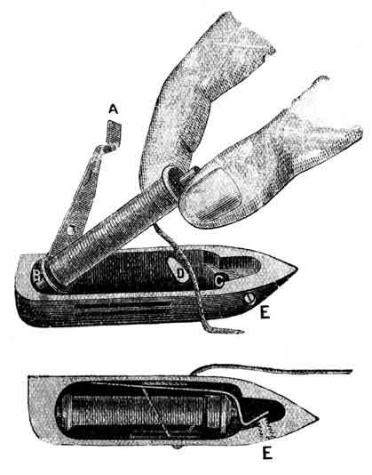
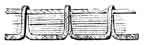
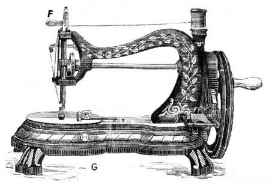

INSTRUCTIONS FOR OPERATING THE
HAND
SEWING MACHINE
~~~~~~~~~~~~~~~~~~~~~~~~~~~~~~~~
Jones' Sewing Machine Co. Limited,
GUIDE BRIDGE,
Near Manchester.
TO THREAD THE SHUTTLE
| Hold the shuttle in the left hand and raise the tension spring latch A with the first finger of the right hand. Hold the bobbin or reel so that the thread will draw off from the underside as illustrated. Now, place one end of the reel into the small hole B at the heel or back end of the shuttle, and drop the other end into the small slot C at the point of the shuttle. Pass the thread round the point or end of the bar D, be careful that the thread pulls from the bottom side of the Reel, thence through the slot in the tension spring latch A. Now drop the spring latch into the position, as illustrated; care being taken to keep the end of the thread tight whilst putting the spring down, so that the thread may not snarl or knot between the spring latch and the side of the shuttle. Pass the thread through slot F to the outer side of the shuttle and draw it under the spring.
When the shuttle is threaded, before you put it into the machine, ALWAYS PUT ONE DROP OF OIL ON THE FACE OF THE SHUTTLE. It causes the Machine to run easy and smoothly, and the shuttle will last three times as long. |
 |
TO REGULATE THE SHUTTLE TENSION
The tension may be regulated and varied to the greatest nicety by turning the Tension Screw E either backward or forward, so as to force the tension spring latch against the thread which lies between the spring and the side of the shuttle, and thereby increase or diminish the tension as desired. By turning the shuttle tension screw E to the right, you increase or tighten the tension. By turning the shuttle tension screw E to the left, you decrease or slacken the tension. Care should be taken not to turn the screw E too far back, or it will project beyond the side of shuttle, and break the cotton as the shuttle passes through the loop of the upper thread. Where is no other shuttle in existence that possesses so beautiful and even a tension.
NOTE: The shuttle Tension SCREW is split at the end, so that if it wears slack you have simply to take the Screw out of the shuttle, and insert the blade of a knife into the slot, so as to open out the Screw, and thus make it fit into the shuttle as tight as when new.
TO COMMENCE SEWING
Raise the presser foot by pulling the lifter F to the right; withdraw the slide that covers the shuttle race, and place the shuttle into the shuttle-carrier, leaving about two inches of thread stretched out behind. Then let the needle descend (putting the finger on the end of the thread). The shuttle will then pass through the loop of the needle thread, and when the needle rises it will bring the shuttle thread up with it through the needle-hole in cloth-plate. Then close the slide, place the fabric under the needle, and let the presser-foot down upon it. Be sure that the presser-foot rests upon the fabric before commencing to sew. There must be some tension upon the threads, otherwise they will know or tangle up.
THE TENSIONS
The tension should be so regulated as to draw both threads and lock them together in the centre of the fabric, thus: producing a firm, neat, and durable Lock-Stitch, which will neither rip nor ravel, but has the same appearance on both sides of the material when sewn, if both threads are of proper size, and have the right amount of tension upon them.
If the shuttle thread is very tight and the upper thread too loose, the under thread will be straight, thus: because there is not sufficient upper tension to draw the under thread in. On the other hand, if the shuttle thread draws off too easily, and the upper is too tight, the under thread will be drawn up through the fabric, and the upper thread will lie straight, thus: while the under side may look well. The stitch should be made perfect on both sides. It is therefore necessary to have the tension of both threads as nearly alike as possible, and as tight as the threads will sew without breaking. The upper tension can be increased or lessened at pleasure by turning the tension thumb nut H; the lower tension by turning the screw in shuttle to right or left.
TO REMOVE THE WORK
Note the New Thread Releasing Arrangement, an Important Improvement in this Machine.
When removing the work from under the machine, immediately you lift the presser bar foot lifter you will find that the thread or cotton in the tension is released, and you can draw the work from under the machine easily without breaking the thread or needle. It is always necessary to leave a few inches of cotton or thread when you cut off the work.
TO REGULATE THE LENGTH OF STITCH
|  | By turning the thumb screw G to the left hand, the stitch will be lengthened. By turning the thumb screw G to the right hand, the stitch will be shortened. NOTE: - Be careful not to turn the thumb screw G too much to the right hand, or you will stop the feed from acting and carrying the work forward. |
MISSED STITCHES
Are caused by the needle being too high or too low, or the cotton being too fine for the needle, or the needle point being blunt or damaged.
If the thread is improperly twisted, it may throw the loop towards one side, instead of square into the shuttle race. In that case the needle should be slightly turned in an opposite direction, to counteract this tendency to throw the loop away from its proper position.
When using very fine needles, and also when stitching heavy work, be sure that the point of the needle is perfect, sharp, and not blunted or turned over.
It is important the needle point is SHARP.
An imperfect needle may cause the best Machine to miss stitches.
BREAKING OF THREAD OR COTTON
Is caused by the needle being put into the Machine with the short groove on the wrong side:
Or if the needle is set too high or too low;
Or by the tension being too tight;
Or by the thread being too large for needle eye;
Or if the needle eye be rough or sharp.
Be sure that the hole in the needle plate is not rough or damaged but perfectly smooth.
If the hole in the needle plate is rough, it is sure to cause the Machine to cut and break the thread.